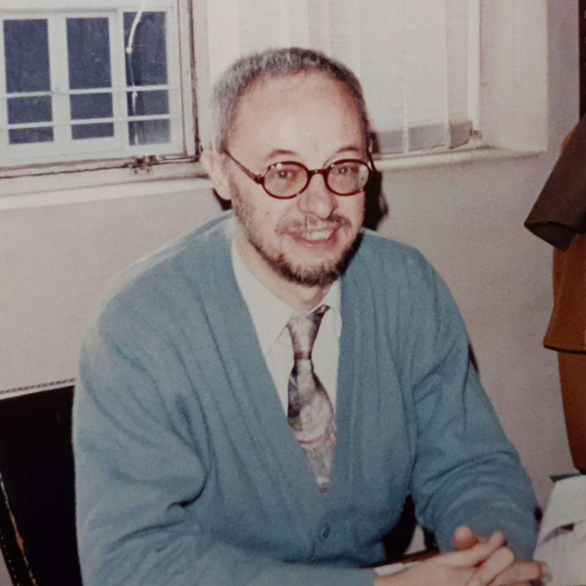

nacimiento: 2/7/1941
DNI:4375053
Estado civíl: Casado con Noemi Antraygues
Edad:80 años
Hijos: Actualmente cuenta con cuatro hijos, dos hombres, pablo doublier(mi papa) y nicolas(mi tío) y dos mujeres , cecilia doublier y celeste doublier (mis tías)